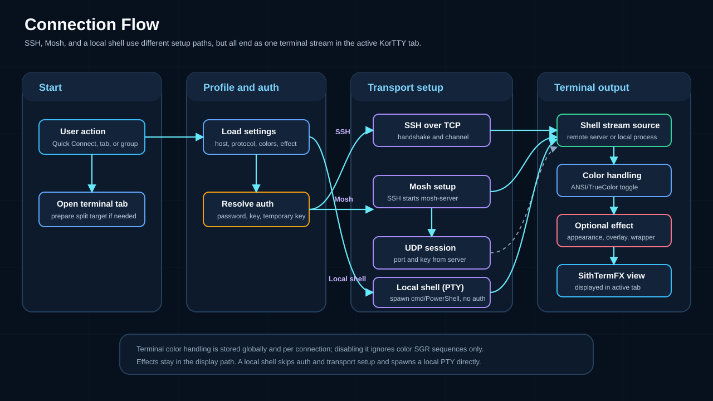

Connections¶
korTTY manages SSH, Mosh and local-shell connections through three entry points: Quick Connect, the Connection Manager, and saved Projects.

Quick Connect¶
Open with Ctrl+K (or Connections → Quick Connect…). Enter host, port, username and authentication, and connect without saving. Frequently used connections appear as quick buttons; a live search filters them. Saved connections can be picked from a dropdown with its own search field that matches name, host or tag (* works as a wildcard); a saved connection's tag is shown next to its name (🏷) in the dropdown and in the quick buttons' tooltips.
Connection Manager¶
Connections → Manage Connections… opens a searchable tree of saved connections (optionally grouped); the search field matches name, host, IP address or tag, with * as a wildcard. From here you create, edit, duplicate, delete, tag, import and export connections.
Signing in¶
Connect in the Connection Manager signs in to the selected connection in this order:
- korTTY checks your organization's server access policy first. A blocked server or jump server shows the policy message before korTTY asks you for anything.
- A shared teamwork connection that names neither a credential nor an SSH key uses the team's default authentication.
- A connection with a temporary SSH key reuses that key while it is still valid and asks for a new one once it has expired.
- A local shell and SSH key authentication connect without a password.
- Otherwise korTTY uses the saved password, from the connection's stored credential first and then from the connection itself, and asks for the password when none is saved; OK stays greyed out until you type one. When the saved password is in the locked vault, korTTY first offers Unlock Vault… (see Unlocking the vault later); if you do not unlock it, korTTY asks you to type the password instead.
Cancelling any of these questions opens no tab. Duplicate in a terminal tab's context menu signs in the same way, so it also asks for a new temporary SSH key when the tab's key has expired. Reopen Closed Tab and File → Recently Closed sign in the same way too, with the saved connection as it is now (see Working with tabs).
Creating / editing a connection¶
The connection editor has these tabs:
| Tab | Contents |
|---|---|
| Connection | Host, port, username, protocol (SSH / Mosh / Local Shell), terminal emulation, Character encoding (use default / UTF-8 / ISO-8859-1 / ISO-8859-15 / Windows-1252), authentication (password / key / keyboard-interactive), Host key verification (use default / verify / don't verify), group/folder assignment and an optional free-text tag. For Local Shell connections host, port, username and authentication are not required and are disabled. See Character encoding. |
| Terminal Settings | Per-connection colors, font, ANSI/TrueColor handling, the Terminal behavior section with the tab color and the keyword highlighting rule set, terminal effect |
| SSH Tunnels | Local / remote / dynamic port forwarding |
| Jump Server | Bastion-host chaining |
| Terminal Logging | Writes this connection's terminal output to a file — folder, format, daily rotation, compression and retention. See Terminal logging. |
| Journal | Per-connection session journal: enable journaling for this connection and configure its capture log and AI summarization |
| Window Geometry | Saved size/position for this connection |
| AI | Per-connection AI defaults: the AI profile and AI Skills used by terminal AI features on this connection |
Character encoding¶
Character encoding sets how korTTY decodes what this connection's session prints and encodes what you type and paste, for servers whose programs still write ISO-8859-1, ISO-8859-15 or Windows-1252 instead of UTF-8. Use default follows Settings → Terminal → Encoding for SSH connections and means UTF-8 for local shells. Mosh only works with UTF-8, so the dropdown is locked for Mosh connections and a note beside it says so. The choice is stored with the connection, survives duplicating, exporting and importing, and applies the next time the tab connects or reconnects.
Keyword highlighting¶
The Terminal behavior section of the Terminal Settings tab picks the keyword highlighting rule set this connection's terminals show: Use the default follows the default rule set of Settings → Terminal, None keeps them plain, or pick a built-in set or one of your own, for example Network devices for switches. The section applies whether or not the connection uses its own terminal settings, and also while terminal effects are switched off. The choice is stored with the connection, survives duplicating, exporting and importing, and saving in the Connection Manager applies it to the connection's open terminals at once. A set chosen for a single pane in a menu or with Ctrl+Shift+H (Cmd+Shift+H on macOS) still wins for that pane.
Tags¶
Every saved connection can carry one optional free-text tag — a label such as prod, staging or a customer name — independent of the group/folder hierarchy. Set it on the connection editor's Connection tab (next to the group), or in bulk in the Connection Manager. Tags are stored with the connection in connections.xml and survive duplicating, exporting and importing.
- Visible — tagged connections show a 🏷 badge after their name in the Connection Manager tree and in Quick Connect's saved-connections dropdown; the tag also appears in the tooltip of the frequently-used quick buttons.
- Searchable — the Connection Manager search (local and Teamwork tabs) and Quick Connect's saved-connections search match tags as well as names and hosts.
- Bulk assign / remove — select one or more servers and choose Assign Tag from the context menu to tag them in one step. The prompt is pre-filled when all selected connections already share the same tag, and clearing that pre-filled value removes the tag. Remove Tag clears the tag and is enabled only while the selection contains at least one tagged connection. The same two entries on a folder's context menu apply to every connection in that folder, subfolders included.
- Export by tag — once at least one tag exists, the Connection Manager's export dialog offers a Connections to export choice: keep the pre-selected connections, or export all connections with these tags — pick one or more tags from the list, the header's connection count follows the selection live, and the export button stays disabled while nothing matches.
Tab color¶
A tab color marks every terminal tab of a connection with a small colored dot in front of its title and a 3-pixel frame of the same color around its terminal, so a production server stands out from test machines at a glance. Set it on the connection editor's Terminal Settings tab, in the Terminal behavior section: tick Mark this connection's tabs with a color and pick the color. The picker offers red, orange, yellow, green, blue, purple and gray as custom colors, and any other color works too. The section applies whether or not the connection uses its own terminal settings, and it stays when terminal effects are switched off. Untick the box to remove the color.
- Not by color alone — pointing at a colored tab shows a tooltip with the connection (
user@host, or the connection's name for a local shell) and the color by name and code, for example Tab color: red (#D32F2F), set on this connection. Screen readers read the same text for the dot. - Frame around the terminal — the frame surrounds the whole tab content, all split panes and the status bars included. It takes 3 pixels on each side, so setting or removing a color resizes the connection's open terminals and full-screen programs redraw. To keep only the dot, switch off Frame the terminal in its connection's tab color in the Window settings.
- Applies at once — saving in the Connection Manager recolors the open tabs of that connection in every window, and removing the color removes the dot and the frame. Tabs opened from a saved connection through Quick Connect, Duplicate, Reopen Closed Tab or a project show its color too.
- Status colors stay — the yellow tab while a connection is being made and the dark red tab of a failed or lost connection work as before; the dot and the frame are shown in addition and never replace them. A pane that Split Right (new connection) or Split Down (new connection) opened to another server is part of the same tab and sits inside the tab's frame, so it shows the tab's color, not its own.
- Stored with the connection — the color is saved in
connections.xmlas#RRGGBBand survives duplicating, exporting and importing. A value that is not a hex color is ignored. - Color from the credential's environment — a connection without a tab color of its own can take the color of its stored credential's environment, for example red for every connection that signs in with a production credential. Give the environment a color in the Credentials manager under Environments..., see Environments and tab colors. The tooltip then names the environment instead of saying the color is set on the connection, and a color set on the connection always comes first.
Shared connections bring their own color
A teamwork connection shows the color written in the shared file, so whoever maintains that file decides how its tabs are marked. That color also comes before the color of your own credential environment. Treat the color as a hint, not as proof of which server you are on: the tooltip still names the connection, and so does the tab title unless you renamed the tab or its shell set a title.
Protocols¶
Standard SSH via Apache MINA SSHD. Supports password, public-key and keyboard-interactive authentication, keep-alive, and OSC 8 hyperlinks for web and mail addresses that open with Cmd / Ctrl + click (see Links in terminal output).
Roaming, latency-friendly Mosh transport (mosh4j). The Mosh backend is bundled in native builds; existing connections need no migration.
Opens the local machine's shell in a terminal tab (no network) via a pty4j-backed pseudo-terminal. Host, port, username and authentication are not required. See Local Shell below.
SSH host-key verification¶
Interactive Terminal and SFTP connections use the same trust-on-first-use (TOFU) host-key store. Mosh uses it for the SSH bootstrap as well. Trust is keyed by the normalized host name and port, so different saved connections to the same endpoint share one decision.
On the first connection, korTTY shows the key algorithm and OpenSSH SHA-256 fingerprint. Verify that fingerprint with the server administrator before selecting Yes; No is the safe default. A matching key is accepted silently on later connections. If the server presents a different key, korTTY hard-blocks the connection, shows the expected and offered fingerprints, and does not retry because repeating the attempt cannot resolve a possible man-in-the-middle attack. A changed key is never replaced automatically.
When a server was legitimately rebuilt, the changed-key alert of a terminal tab or the SFTP manager offers Review and Replace… next to Close, which stays the default. The review shows the currently trusted key and the new key, each with its algorithm and SHA-256 fingerprint. Replace Key and Connect stays disabled until you tick I have verified the new fingerprint with the server administrator, and Cancel is the default button, so Enter never confirms. After you confirm, korTTY replaces the trusted key and the same connection continues. The replacement only succeeds while the trusted key is still the one you reviewed: if another window changed or removed it in the meantime, the connection stays blocked and you reconnect to review the current key. A jump server's changed key gets the same review when the connection was opened from a terminal tab or the SFTP manager.
Other connections never offer the replacement, so nothing that runs without your attention waits on a review dialog: the SSH bootstrap of Mosh sessions, remote editors and image viewers restored with a project, and other background transfers. Their alert points to Configuration → Security → Known Hosts… instead. While an enterprise policy sets enforce-host-key-check, korTTY can neither replace nor remove a trusted key; the alert says so, and your administrator has to update the key.
Configuration → Security → Known Hosts… lists every trusted key with host, port, algorithm, SHA-256 fingerprint and the time it was trusted. The search field filters by host, port, algorithm or fingerprint, ignoring case. Remove… asks for confirmation, with No as the default, and deletes the key only if it still has the fingerprint shown; the next connection to that server shows the first-use prompt again. If the store cannot be read, the dialog shows the error and offers no actions.
The first-use prompt can be turned off for hosts where it is not wanted — set Host key verification on the connection editor's Connection tab or in Quick Connect (Use default / Verify / Don't verify), per group via the Connection Manager's group context menu, or globally under Settings → Terminal. The relaxation is accept-new only: an unknown key is pinned without a prompt, but a key that differs from one already pinned for that host is still hard-blocked. See Relaxing host-key verification.
The interactive pins are stored atomically in ~/.kortty/ssh-host-keys.properties, with cross-process locking so two korTTY windows cannot overwrite each other's decisions. Removing the last trusted key deletes the file, which korTTY treats as an empty store. These endpoint-based pins are separate from the connection-ID-based pins used by unattended JobScheduler SSH, SFTP, and Rsync jobs.
When a new split connection is opened, the SSH handshake runs on a worker while a progress dialog keeps the JavaFX interface responsive. This allows both host-key confirmation and keyboard-interactive authentication to complete without blocking the UI.
Local Shell¶
A Local Shell connection spawns a local pseudo-terminal (PTY) on your own machine instead of connecting to a remote host. It is selectable in both Quick Connect and the Connection Manager; for these connections host, port, username and authentication are not required (and are disabled in the dialogs), and no password prompt is shown.
Choosing a shell¶
| Platform | Options |
|---|---|
| Windows | PowerShell (default) or cmd.exe. Git Bash, Cygwin and WSL are also offered as presets — but only when actually installed (Git Bash/Cygwin are detected via their usual install locations / PATH; WSL appears only when wsl.exe is present and at least one distribution is installed). |
| macOS / Linux | Defaults to your $SHELL (falling back to /bin/zsh or /bin/bash). |
A free-form Custom command field accepts any executable with arguments (e.g. pwsh.exe, wsl.exe -d Ubuntu, a Git Bash path), and an optional start directory can be set. The command parser is quote-aware, so shell paths containing spaces — like "C:\Program Files\Git\bin\bash.exe" — launch correctly.
When korTTY runs from its Flatpak package, the local shell is started on the host through flatpak-spawn --host, including the selected start directory and terminal locale. The package has host-filesystem access so terminal file actions can use host paths. Because the sandbox-side process ID belongs to flatpak-spawn rather than the host shell, current-directory tracking uses trusted absolute prompt paths instead of reading /proc/<pid>/cwd; if no safe host path can be established, path-dependent actions stop with an explicit error.
Terminal features in local shells¶
Terminal logging and recording, plus the AI input/data hooks, work for local shells via a shared ObservableTtyConnector interface. Typed and pasted agent requests use the same byte-level input path, and terminal file actions plus local agent runs follow the interactive shell's current directory. macOS/Linux use the local process directory; native PowerShell and cmd use absolute prompt paths. WSL, Git Bash, Cygwin, and custom commands are best-effort when their shell path namespace differs from the host filesystem, and an unmappable directory produces an explicit error instead of a wrong-file fallback. Features that depend on an SSH channel stay SSH-only.
AI Agent in local shells
The AI Agent and AI Planning also run in local shells on Windows, macOS and Linux — see AI assistant.
Tunnels & jump servers¶
- SSH tunnels — forward ports through the connection: local (
-L), remote (-R) or dynamic / SOCKS (-D). - Jump server (bastion) — route the connection through an intermediate host; SSH terminal and SFTP sessions both hop through it. See Jump Server.

Import from other clients¶
Connections → Import… reads connection files from MTPuTTY, MobaXterm and PuTTY Connection Manager, with group filtering and credential handling.
More to come
This page is part of the scaffolded guide. The full feature library — SFTP, snippets, JobScheduler, AI assistant & tools, terminal recording, security, and the complete settings tables — is being filled in next.